GitHub issues
Contents
GitHub issues#
GitHub has a very useful tool to help organize our own tasks. This same tool is very powerful for working collaboratively. This is the “Issues” tool:
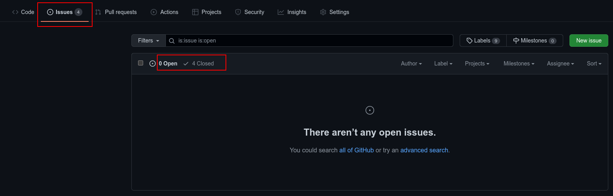
Creating our first Issue#
Every GitHub has a Issue tab. Let’s open a very simple Issue - click in the green button “New issue”. A window very similar to the “Pull request” will open:
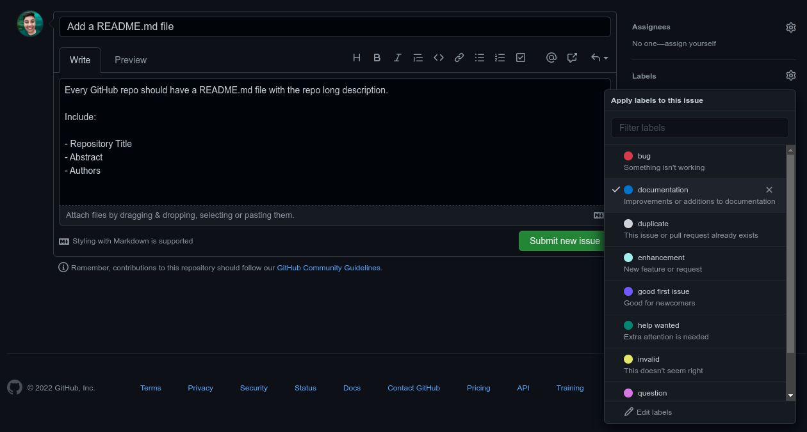
We are going to point that it is a good idea to create a README.md file.
We are also going to point some useful content that should appear in this file.
We are going to include a label for the issue.
Then, press the Submit new issue button.
Working on our first Issue#
Before solve any Issue we should careful read the issue description and then assign ourselves to the task. This will prevent more than one person working in the same task.
Select the desired Issue
Click in “Assigners”
Add yourself.
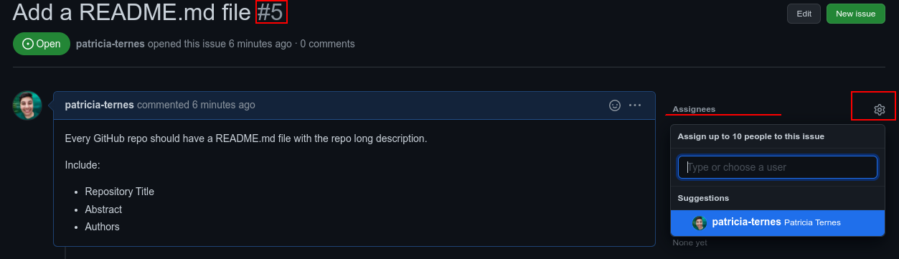
Note
Take note about the Issue number (here #5).
Now solve the issue. You can work in your local machine and then make a pull request (the best approach). Here, for simplicity, I am work directly on GitHub.
To do this, go to “code” tab and create a new file (Add file).
As README is a very standard file, there is a suggestion to do this. Just click
on the green Add a README:
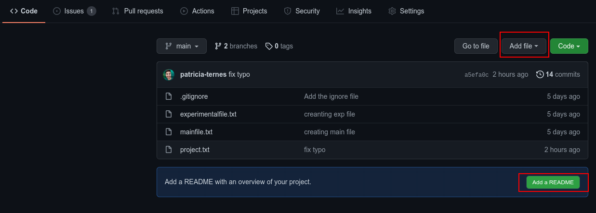
Now, just type the changes:
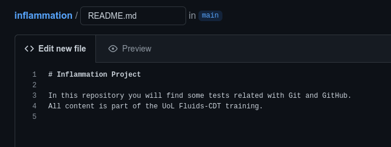
After that, you should commit your changes (remember that if you are working on GitHub, there is no staging area and every change is a commit). You can put any commit message here, but there is an advanced trick you should use:
Add to your commit the link for the issue by adding a # and the issue
number
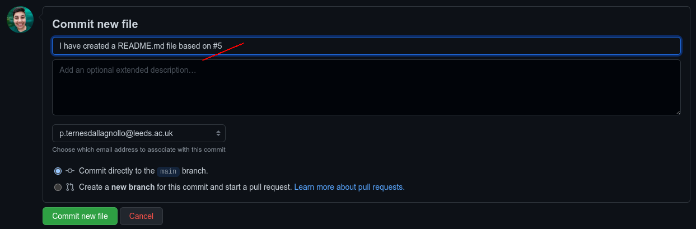
Review the issue#
The work that we did was enough to solve the Issue? Can we close the Issue?
The main idea of having Issues is not having Issues, so, the ideal scenario is commit changes and close issues, but we can only do that, if our work did everything that was necessary. In this example, if we compare the Issue with the commit, we can see that the authors information is still missing, so the issue must remain open. We can add a comment about this:
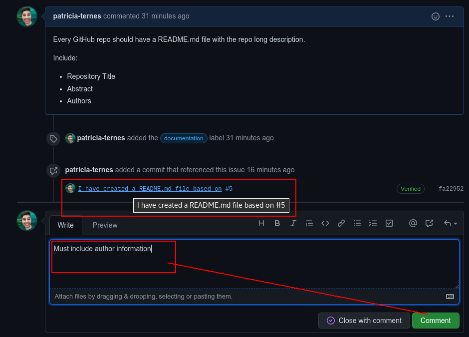
Closing the issue: the “pro” approach#
As you can see in the image above, we could manually close the issue if everything was done. But, if we are completely sure that our change solve the problem, we could do this with the commit message. So, let’s finally finish this issue:
open the README.md file
add the missing information
commit the change with a keyword and the issue link (here:
#5)
See my commit:
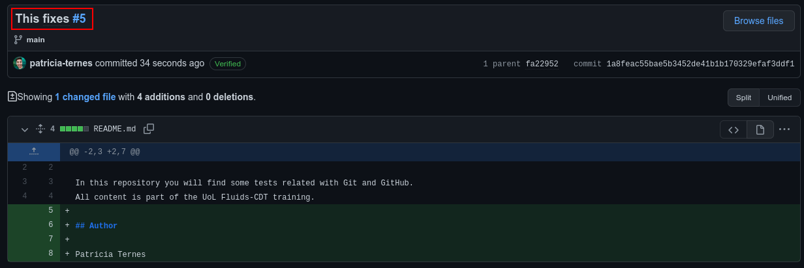
Now you can navigate in your Issues tab and see that your Issue was automatically closed. If you navigate into the closed issues, you can see that all commits and comments related to this issue is organized and anything was lose.
Some possible keywords:
fix
fixes
close
See also
See the GitHub Docs about Links to Issues
Issue in specific files#
Our first issue was a general repository problem. Now, we are going to see how to work with issues in specific files. Let’s try a generic example, imagine that you see:
a problem X
in the line Y
of file Z
If we open an issue following the above steps, the problem X is not be directly linked with file Z. So the person solving the problem should find the right file and line before thinking about the problem itself.
We can make this workflow better. We are going to use the README.md file as example again, so first step is open the file on GitHub in the source view (some file open automatically in this view, some not.).
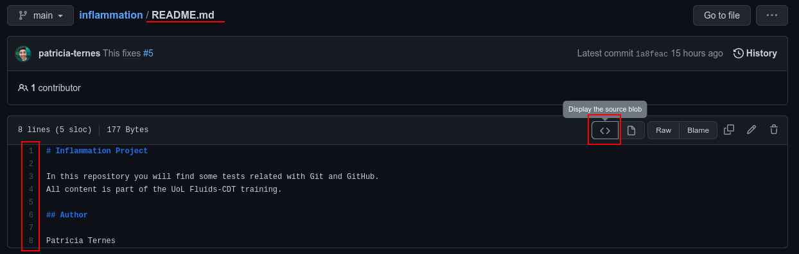
In the source view, the line numbers should appear in the left corner. After
find a problem, you can click on the line number and a ... will appear. Now,
click in this “more” button and choose the “Reference in new issue” to
automatically create a issue linked with this line.
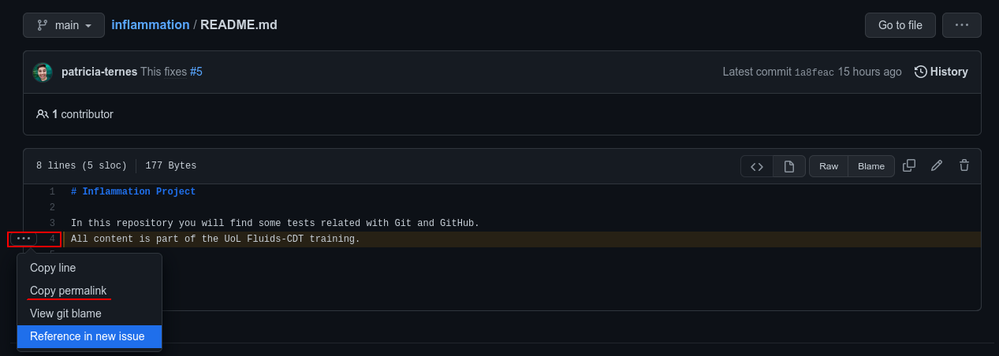
Note
The GitHub is going to use a “permalink” to reference this file/line with the issue. You could also use the “permalink” to reference this file/line in other places (or to create the issue manually).
Tip
If your problem is on more than one line, you can select multiple lines and reference them all together.
The procedure from here is similar to before. The only difference is the link in your message. Write your title/message and submit.
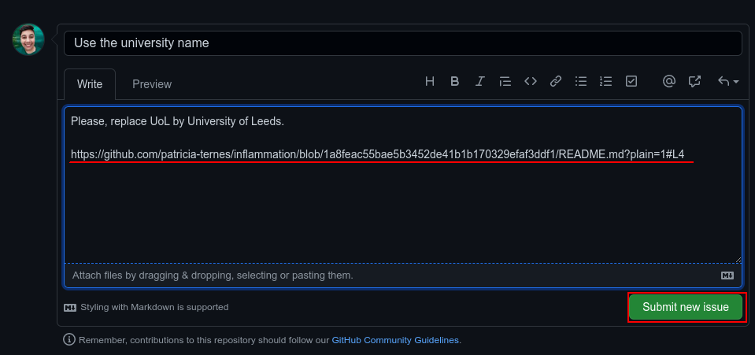
Now look your new Issue:
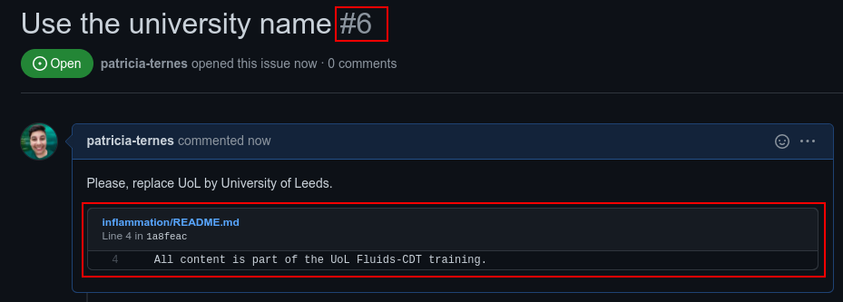
You can note that the permalink was rendered as a file link plus a view of
linked lines. You can directly click on the file, and solve the issue. Remember
of use the Issue Number (here #6) in the commit message the improve your
workflow.